Chapter 1 Introduction and exploratory data analysis
1.1 Introduction to probabilistic distributions
1.1.1 Motivation
In this section we will see some of the most commonly used distributions used in statistics. It is important to learn to recognize these distributions and some of their properties to better use statistical models and tests in your analysis.
1.1.2 Discrete random variables
Discrete random variables are those taking only integer values. Common distributions for those variables are the uniform distribution, the Bernoulli distribution and the binomial distribution.
The discrete uniform distribution assigns the exact same probability to a finite set of values. A common example is throwing a fair dice. After throwing the dice, each number 1, 2, 3, .., 6 has the same probability to be obtained, equal to 1/6.
#plotting probability discrete uniform distribution
x <- c(1:6)
y <- rep(1/6,6)
plot(x,y,type="h",xlim=c(1,6),ylim=c(0,1),lwd=2,col="blue",ylab="p")
points(x,y,pch=16,cex=2,col="blue")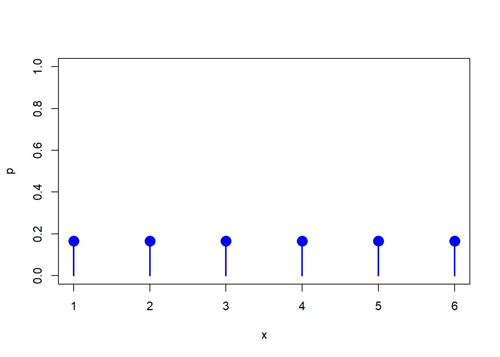
Consider another example, where you flip a coin: heads is registered as 1, and tails as 0. The Bernoulli distribution can be used to study this variable: it assigns probability p to 1 (heads), and 1-p = q to 0 (tails).
You could also have a variable that can yield many possible values, which is transformed to yield only 1. For example, let us throw a fair dice and check if the number is equal to or lower than 2. The probability of a success (obtaining a value below or equal 2) corresponds to the dice returning 1 or 2, so is equal to 1/3. Therefore, the probability of throwing a number larger than 2 is 2/3 (corresponding to values 3, 4, 5, 6). The analysis of the association between covariates and the probability of success is often done via logistic regression.
#plotting probability Bernoulli distribution
x <- c(0:1)
y <- c(2/3,1/3)
plot(x,y,type="h",xlim=c(0,1),ylim=c(0,1),lwd=2,col="blue",ylab="p")
points(x,y,pch=16,cex=2,col="blue")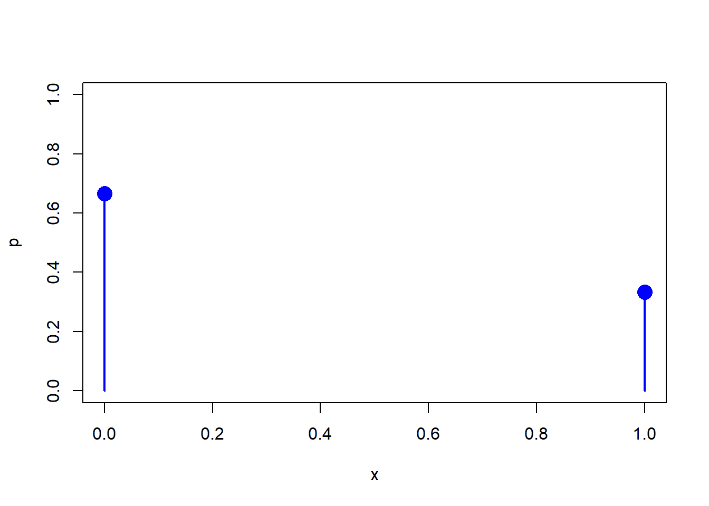
Now imagine that you throw a fair coin not once, but 10 times. Then the number of times that the result was heads can be modelled by the binomial distribution. It describes the probabilities of results of several independent throws, each of which with the same probability of success (heads).
If we go back to the previous dice example, we can compute the probability to obtain 4 successes (dice gives 1 or 2) in 10 trials. This can be done with the function dbinom. The probability is 0.2276076.
#plotting probability binomial distribution
x <- c(0:10)
y <- dbinom( x, 10, 1/3)
plot(x,y,type="h",xlim=c(0,10),ylim=c(0,1),lwd=2,col="blue",ylab="p")
points(x,y,pch=16,cex=2,col="blue")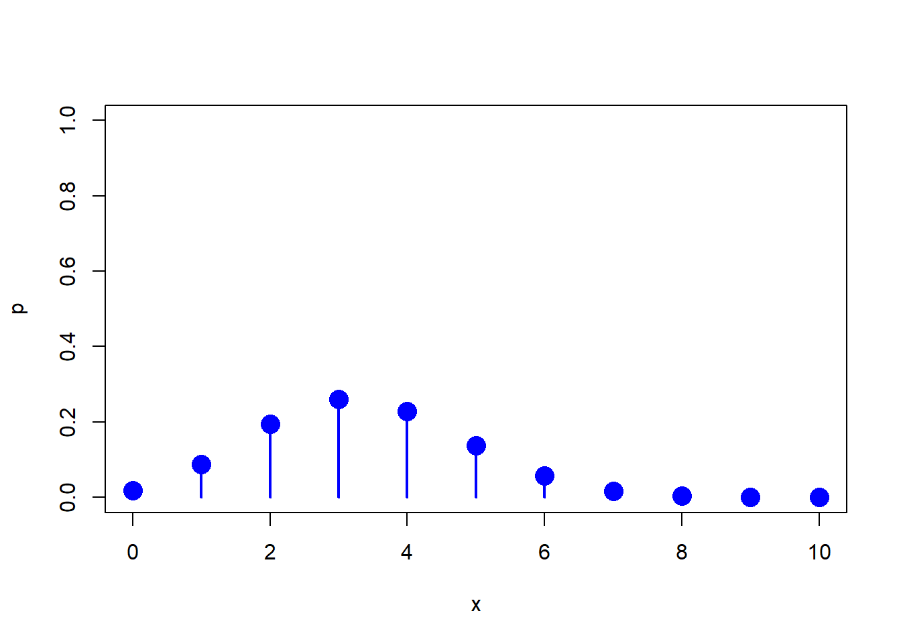
1.1.3 Continuous random variable
A continuous random variable can have an infinite number of possible values. Therefore, the probability to obtain any one value in particular is equal to 0. For these variables, we do not consider the probability of individual values, but instead we consider the probability associated with intervals, say all values between 0 and 1. We call the function describing the probabilities the density probability function. We will now look at some important continuous distributions.
The continuous uniform distribution has a similar definition to the discrete uniform distribution. The probability density function yields the same value across the range of possible values. To illustrate this, let us plot the density of a continuous uniform distribution between 0 and 1.
#Plot the density
curve(dunif(x, min= 0, max= 1), col="blue", from = 0, to = 1 )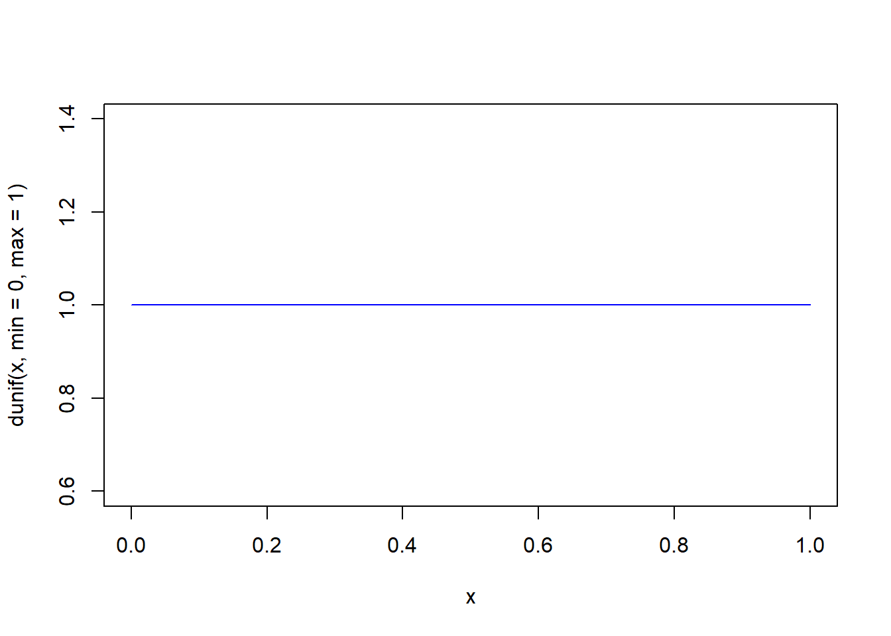
Quartiles are values that leave probability of 1/4, 2/4 (or 1/2) and 3/4 below them. Let us add the quartiles of the uniform distribution to the plot.
#Plot the density and quartiles
curve(dunif(x, min= 0, max= 1), col="blue", from = 0, to = 1 )
abline(v = qunif(c(0.25, 0.5, 0.75), min= 0, max= 1), col= 'darkred')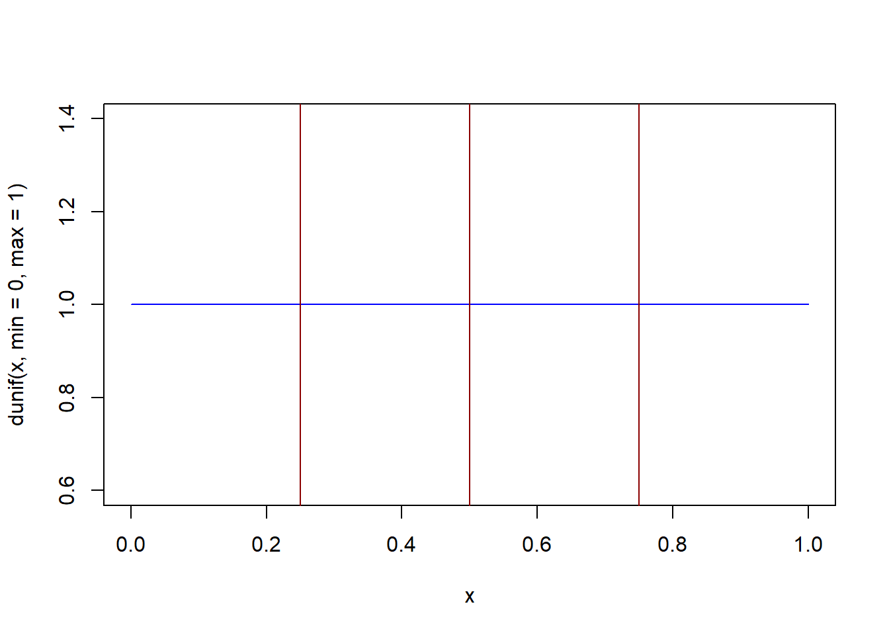
The quartiles split the range of values into 4 parts, each with 1/4 probability. So the probability to observe values between 2 subsequent quartiles is 1/4, or 25%. This means that the probability to observe a value between the first and the third quartiles is equal to 1/4+1/4 = 1/2, or 50%.
Quartiles can also be computed for a sample: they are values that leave 1/4, 1/2 and 3/4 of the observations below them. For example, consider the following sample:
1:12## [1] 1 2 3 4 5 6 7 8 9 10 11 12Then we can take the first quartile as 3, since it has observations 1, 2, 3 up to and below it, 25% of all observations. Of course, a value larger than 3, but smaller than the next value (4) can also be used.
In general, for a continuous variable, the probability to observe a value between 2 given values is equal to the area under the probability density function between these two points. The generalization of the quartiles for any probability is called quantile: the 5%-quantile is the value that leaves 5% (or 0.05) of probability below it. Similarly, the 95%-quantile is the value that leaves 95% (or 0.95) of probability below it. Below we illustrate these with the probability density function for the uniform between 0 and 1.
#Plot of the density and important quantiles
#of a continuous uniform distribution
curve(dunif(x, min= 0, max= 1), col="blue", from = 0, to = 1 )
mcol <- 'darkred'
abline(v = qunif(c(0.025, 0.975), min= 0, max= 1), col= mcol)
text(0.1, 1.1, col = mcol, labels = "0.025")
text(0.9, 1.1, col = mcol, labels = "0.975")
mcol <- 'purple'
abline(v = qunif(c(0, 0.95), min= 0, max= 1), col= mcol)
text(0.15, 1.2, col = mcol, labels = "0")
text(0.85, 1.2, col = mcol, labels = "0.95")
mcol <- 'darkorange'
abline(v = qunif(c(0.05, 1), min= 0, max= 1), col= mcol)
text(0.2, 1.3, col = mcol, labels = "0.05")
text(0.8, 1.3, col = mcol, labels = "1")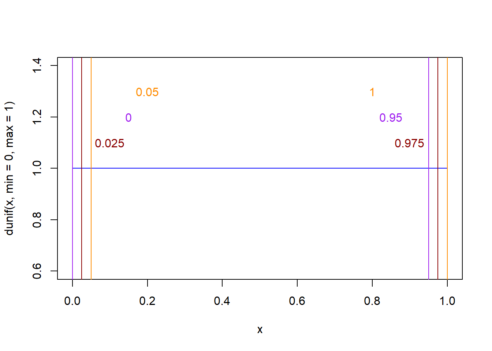
Quantiles are used in statistical testing to build the confidence intervals and compute p-values. Similar to quartiles, we can also obtain quantiles for samples of values. For example, for the sample
1:10## [1] 1 2 3 4 5 6 7 8 9 10the 10% quantile is 1 (or any number larger than 1 but smaller than 2), and the 90% quantile is 9.
The most common distribution encountered in the nature is the normal or Gaussian distribution. This distribution is symmetric, and is defined by its expectation \(\mu\) and its variance \(\sigma^2\), i.e. \(N(\mu,\sigma^2)\). Its values range from \(-\infty\) to \(\infty\). Note that it is important to make the difference between the expectation of the distribution and the sample mean derived from this distribution. Indeed, these two will be equal only if all possible samples are included to compute sample mean.
#Plot of the density and quantiles of a normal distribution
curve(dnorm(x, mean = 0, sd = 1), col = 'blue', from = -5, to = 5)
abline(v = qnorm(c(0.25, 0.75), mean = 0, sd = 1), col= 'darkgreen')
abline(v = qnorm(c(0.025, 0.975), mean = 0, sd = 1), col= 'darkred')
abline(v = qnorm(c(0, 0.95), mean = 0, sd = 1), col= 'purple')
abline(v = qnorm(c(0.05, 1), mean = 0, sd = 1), col= 'darkorange')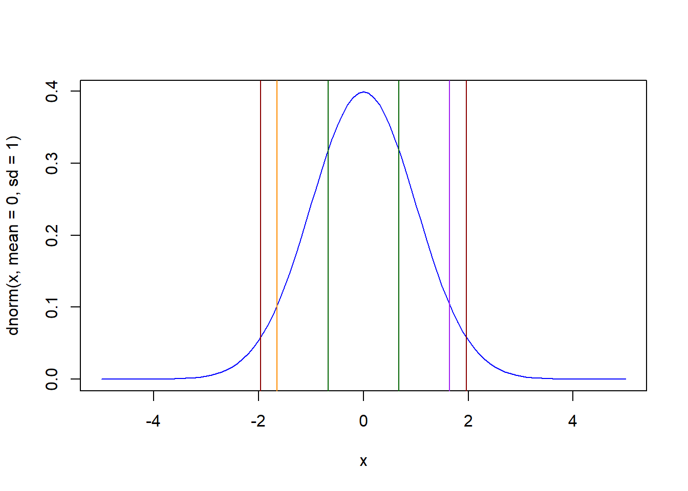
The normal distribution is often referred to as the Gaussian distribution, due to the work of C. F. Gauss in this area. The normal distribution with mean \(\mu=\) 0 and variance \(\sigma^2=\) 1 is referred to as the standard normal distribution.
This distribution is very important in statistics due to one of its properties, the central limit theorem: it states that if you have a population with expectation \(\mu\) and standard deviation \(\sigma\) and take sufficiently large random samples from the population with replacement, then the sample means will follow approximately a normal distribution. This will hold true regardless of whether the source population is normal or skewed, provided the sample size is sufficiently large (usually n > 30) and the variance of the original distribution is finite.
Let’s illustrate the central limit theorem with the gamma distribution that will be seen in another chapter of this course. First consider the probability density function of the gamma distribution:
curve(dgamma(x, shape = 1, rate = 1), from = 0, to = 5, col= 'blue'
, ylab= 'density')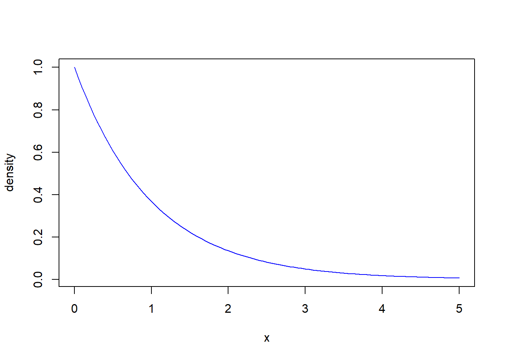
Now we simulate 500 samples, each of 30 values, from the same gamma distribution. We then compute the mean for each sample.
mean.samples <- NULL
for (k in 1:500){
data.sample <- rgamma( 30 , shape = 1, rate = 1)
mean.samples <- c(mean.samples, mean(data.sample))
}The histogram of the means computed is:
hist(mean.samples, col='blue')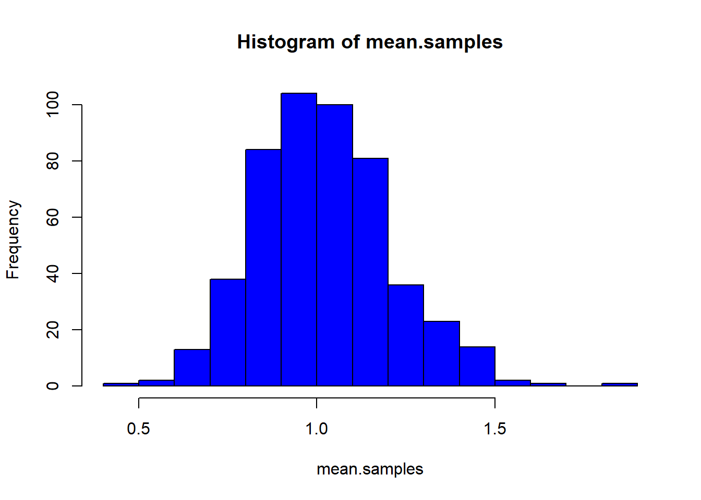
Essentially the arithmetic mean smoothes out small random variations between samples, which can go in either direction. As a result, its distribution will not be skewed, as the original observations, but symmetric and with little variation around its own mean. This is then the normal distribution.
The chi-square distribution, represented by \(\chi^2\) is defined at the sum of k squared independent random variables, each following a normal distribution with mean 0 and variance equal to 1. The chi-square only has one parameter, k, called degrees of freedom. This distribution is often used for statistical testing. Its probability density function is shown below.
#Plot of the density and quantiles of a chi square distribution
#with 1 degree of freedom
curve(dchisq(x, df = 1), col = 'blue', from = 0, to = 5)
abline(v = qchisq(c(0.25, 0.75), df = 1), col= 'darkgreen')
abline(v = qchisq(c(0.025, 0.975), df = 1), col= 'darkred')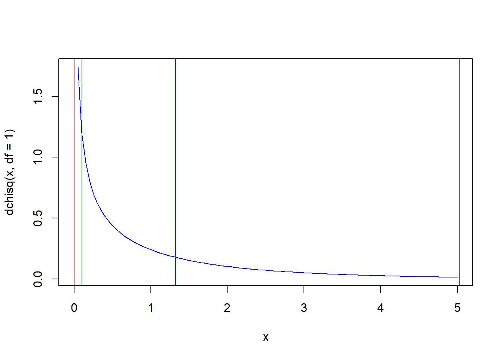
Finally, the Student’s t distribution is very important as it is used in the well-known Student’s-t test to compare means between two samples. This distribution is defined by its number of degrees of freedom \(k\). This distribution, as the normal distribution, is symmetric, as we can see from its probability density function below.
#Plot of the density and quantiles of a chi square distribution
#with 2 degree of freedom
curve(dt(x, df = 2), col = 'blue', from = -10, to = 10)
abline(v = qt(c(0.25, 0.75), df = 2), col= 'darkgreen')
abline(v = qt(c(0.025, 0.975), df = 2), col= 'darkred')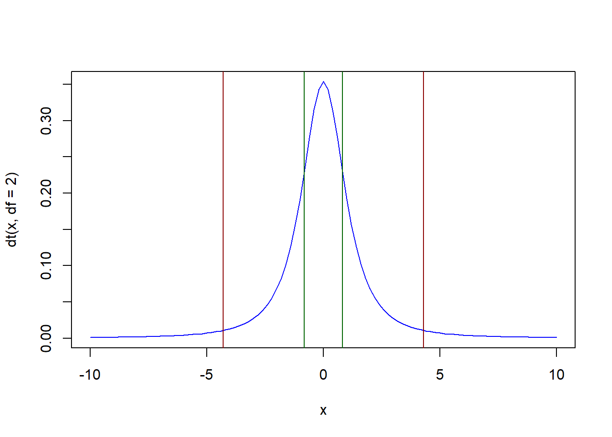
This distribution has the same bell shape as the normal distribution. However, this shape is wider for the Student’s-t, becoming narrower as the number of degrees of freedom increases.
par(mfrow = c(1, 3))
x <- seq(from = -5, to = 5, by = .1)
curve(dt(x, df = 1), col = 'purple', from = -10, to = 10,
main = "t with 1 d.f.",
ylim = c(0, 0.4), ylab = "")
lines(x, dnorm(x, mean = 0, sd = 1), col = 'black')
legend("topleft", legend = c("normal", "t"), lty = "solid"
,
col = c("black", "purple"))
curve(dt(x, df = 10), col = 'purple', from = -10, to = 10,
main = "t with 10 d.f.", ylab = "")
lines(x, dnorm(x, mean = 0, sd = 1), col = 'black')
legend("topleft", legend = c("normal", "t"), lty = "solid", col = c("black", "purple"))
curve(dt(x, df = 30), col = 'purple', from = -10, to = 10,
main = "t with 30 d.f.", ylab = "")
lines(x, dnorm(x, mean = 0, sd = 1), col = 'black')
legend("topleft", legend = c("normal", "t"), lty = "solid",
col = c("black", "purple"))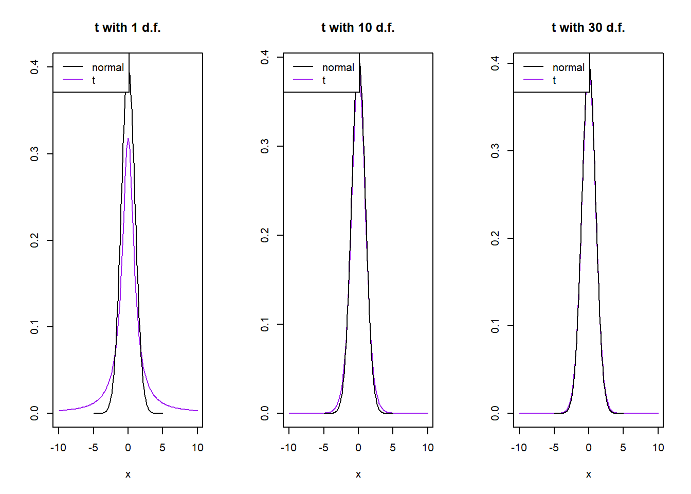
Quick task(s):
Solve the task(s), and check your solution(s) here.
1.2 Data representation
1.2.1 Motivating example
A researcher receives the dataset decathlon2 from the factoextra package. This dataset describe the performances of several athletes in two different sport events. Before starting any analysis, the researcher wants to explore the data, for example by visualising the data.
Below we load the data.
library(factoextra)## Warning: le package 'factoextra' a été compilé avec la version R 4.1.1data(decathlon2)
# Display a description of the dataset
str(decathlon2)## 'data.frame': 27 obs. of 13 variables:
## $ X100m : num 11 10.8 11 11.3 11.1 ...
## $ Long.jump : num 7.58 7.4 7.23 7.09 7.3 7.31 6.81 7.56 6.97 7.27 ...
## $ Shot.put : num 14.8 14.3 14.2 15.2 13.5 ...
## $ High.jump : num 2.07 1.86 1.92 2.1 2.01 2.13 1.95 1.86 1.95 1.98 ...
## $ X400m : num 49.8 49.4 48.9 50.4 48.6 ...
## $ X110m.hurdle: num 14.7 14.1 15 15.3 14.2 ...
## $ Discus : num 43.8 50.7 40.9 46.3 45.7 ...
## $ Pole.vault : num 5.02 4.92 5.32 4.72 4.42 4.42 4.92 4.82 4.72 4.62 ...
## $ Javeline : num 63.2 60.1 62.8 63.4 55.4 ...
## $ X1500m : num 292 302 280 276 268 ...
## $ Rank : int 1 2 4 5 7 8 9 10 11 12 ...
## $ Points : int 8217 8122 8067 8036 8004 7995 7802 7733 7708 7651 ...
## $ Competition : Factor w/ 2 levels "Decastar","OlympicG": 1 1 1 1 1 1 1 1 1 1 ...# Display the first lines of the table
head(decathlon2)## X100m Long.jump Shot.put High.jump X400m X110m.hurdle Discus
## SEBRLE 11.04 7.58 14.83 2.07 49.81 14.69 43.75
## CLAY 10.76 7.40 14.26 1.86 49.37 14.05 50.72
## BERNARD 11.02 7.23 14.25 1.92 48.93 14.99 40.87
## YURKOV 11.34 7.09 15.19 2.10 50.42 15.31 46.26
## ZSIVOCZKY 11.13 7.30 13.48 2.01 48.62 14.17 45.67
## McMULLEN 10.83 7.31 13.76 2.13 49.91 14.38 44.41
## Pole.vault Javeline X1500m Rank Points Competition
## SEBRLE 5.02 63.19 291.7 1 8217 Decastar
## CLAY 4.92 60.15 301.5 2 8122 Decastar
## BERNARD 5.32 62.77 280.1 4 8067 Decastar
## YURKOV 4.72 63.44 276.4 5 8036 Decastar
## ZSIVOCZKY 4.42 55.37 268.0 7 8004 Decastar
## McMULLEN 4.42 56.37 285.1 8 7995 DecastarYou will use this dataset in exercises.
1.2.2 Working example
As a small, simple example, we consider the following simulated dataset: 2 continuous variables, scoreX and scoreY, and a categorical variable representing the membership of group A or B.
set.seed(352)
sample.size<-60
scoreX <- rnorm(sample.size, mean = 5, sd = 1.2)
scoreY <- rgamma(sample.size, shape = 2, scale = 1)
group <- rep(c('A', 'B'), each = sample.size/2)
dataset <- data.frame(scoreX = scoreX, scoreY = scoreY,
group = group, stringsAsFactors = T)Before doing any statistical analysis, it is important to look at the distributions of the variables available. Indeed, looking at the shape of the distributions can help choosing adequate analysis methods. Let’s look at the distribution of the variable scoreX by plotting an histogram of the variable. This can be done using the function hist in R:
#plot the histogram of a variable
hist(dataset$scoreX, col = 'blue')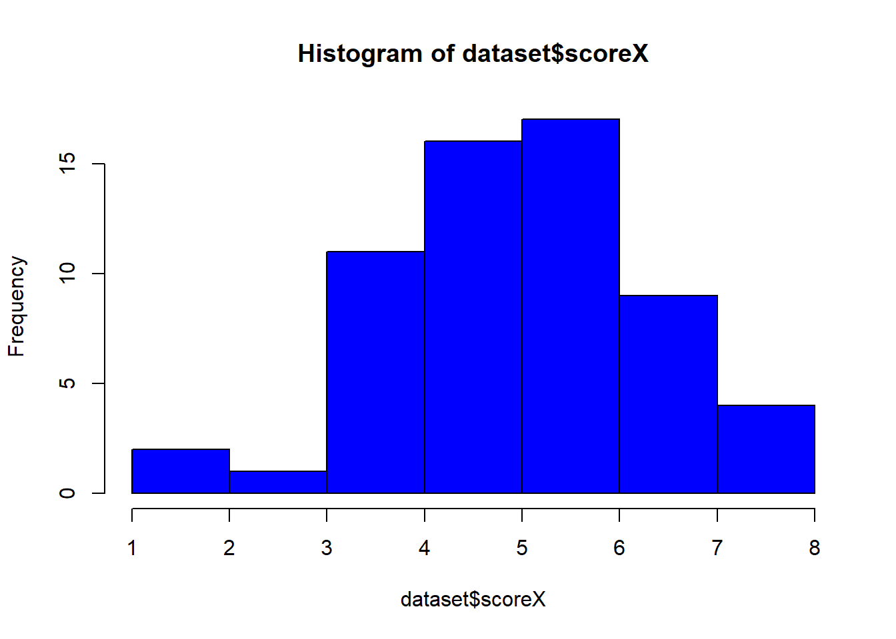
The histogram displays bars representing counts of the number of observations falling into specific bins (intervals of values). This gives us an idea about the shape of the distribution of a variable (in the example above, of scoreX). As we simulated values for =scoreX using a normal distribution, we expect the histogram to reflect this - be symmetric and to not have too many extremen values. Compare the histogram above to the one for the variable scoreY:
#plot the histogram of a variable
hist(dataset$scoreY, col='blue')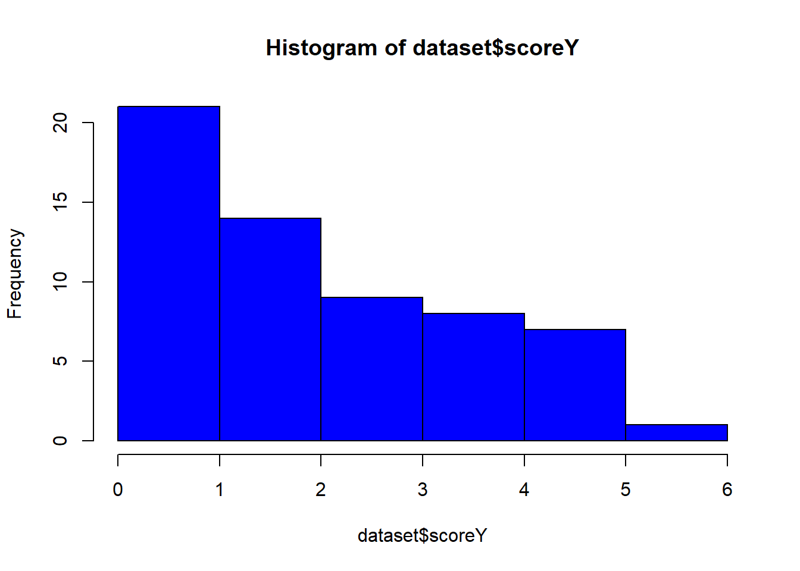
We can also display histograms per group to compare the shape of the distributions between two groups. To do so we need to split the data in two:
#Creation dataset group A
data.A <- dataset[dataset$group == 'A',]
#Creation dataset group B
data.B <- dataset[dataset$group == 'B',]
#plot the histograms of scoreX for both groups
par(mfrow = c(1,2))
hist(data.A$scoreX, col = 'blue', main = 'histogram scoreX group A' )
hist(data.B$scoreX, col = 'blue', main = 'histogram scoreX group B' )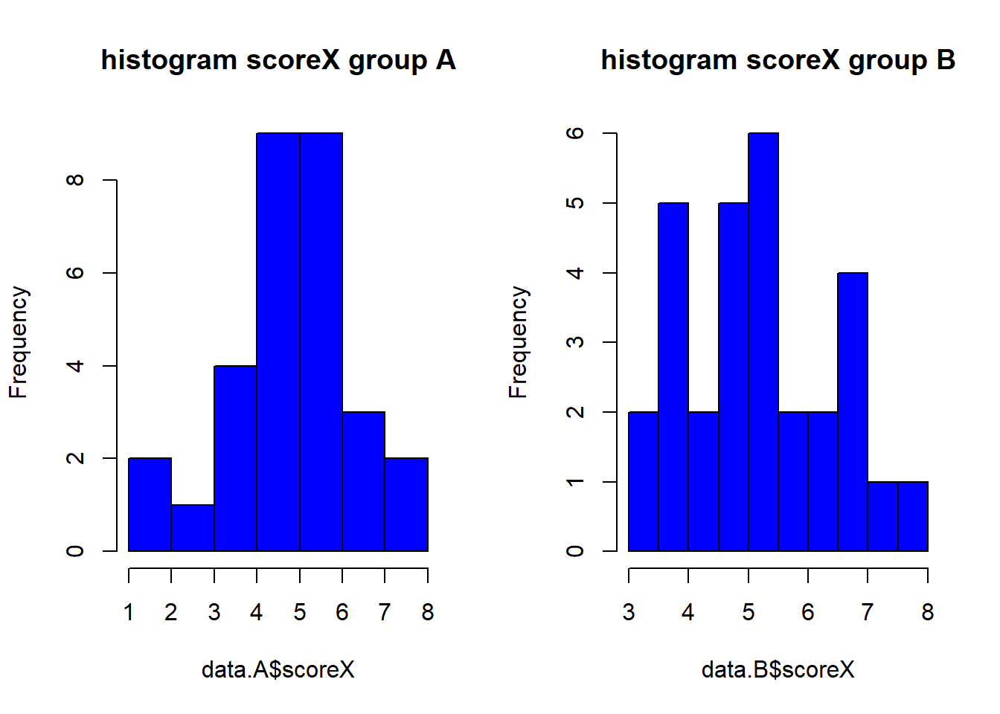
Here, the histograms of subsets of scoreX look quite different. However, the values from both groups are drawn using the same distribution. The differences observed are only due to randomness. We can, for example, add to these histograms the density plot of the distribution used to simulate the scoreX variable:
#plot the histograms of scoreX for both groups with added density
par(mfrow = c(1,2))
hist(data.A$scoreX, col = 'blue', prob = TRUE,
main = 'histogram scoreX group A', ylim = c(0, 0.4), xlim= c(1, 8))
x <- seq(from = -5, to = 15, by = .1)
lines(x, dnorm(x, mean = 5, sd = 1.2), col = 'red', lwd = 2)
hist(data.B$scoreX, col = 'blue', prob = TRUE,
main = 'histogram scoreX group B', ylim = c(0, 0.4), xlim= c(1, 8) )
lines(x, dnorm(x, mean = 5, sd = 1.2), col = 'red', lwd = 2)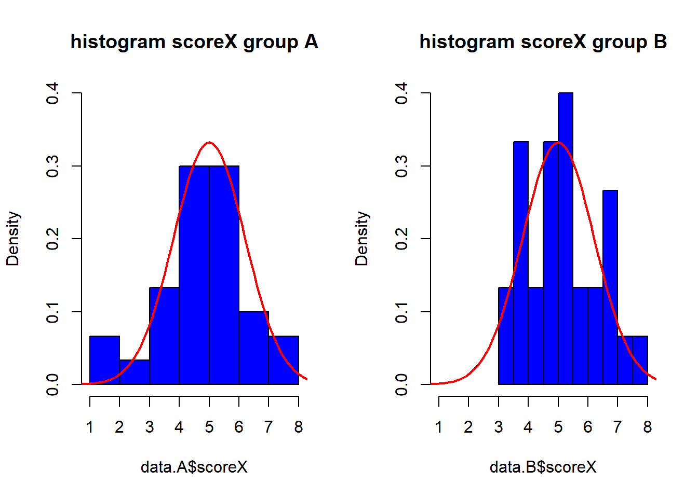
As we can see, it is not possible to determine from these plots that the distributions of scoreX in both groups are different. This is why statistical testing is needed: to check if apparent differences could be due to chance or not.
Another important and useful way to represent the data are boxplots. Boxplots are graphical representations of summary measures of a distribution represented, as the name indicates, in the shape of a box. We will draw a boxplot of the variable scoreY:
#Boxplot of a variable
boxplot(dataset$scoreY, col = 'blue', ylab = 'scoreY')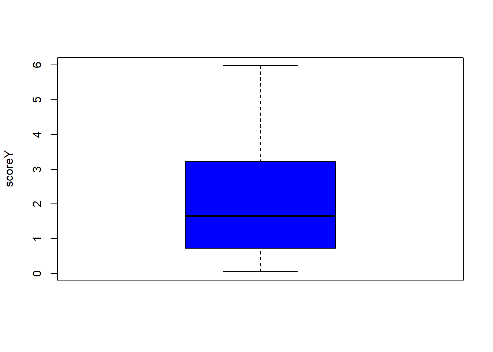
The box represents the space between the first and the third quartiles of the variable. The thick horizontal line represents the median of the variable, i.e. the second quartile leaving 50% of values below it. Finally, the top and bottom lines represent a space equal to 1.5 the boxsize from the nearest edge of the box. Any values above or below these lines are represented as points and are considered as extreme values, and possible outliers.
To make boxplots of the same variable for different groups is really easy, by using a formula as shown below:
#Boxplot of a variable for different gruops
boxplot(dataset$scoreY ~ dataset$group, col = 'blue', ylab = 'scoreY'
, xlab = 'group')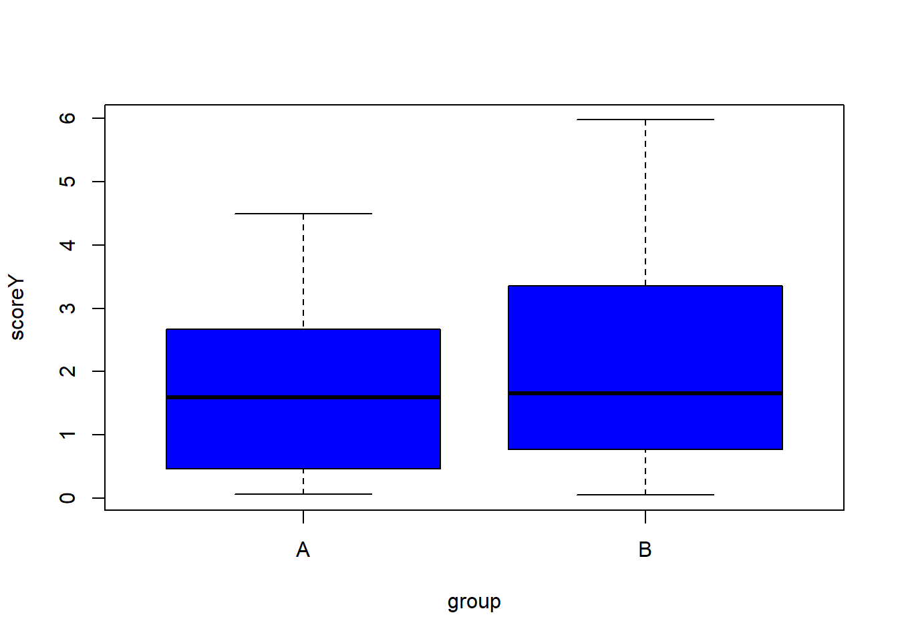
As we can see in these boxplots, the median value for both groups is similar but the group B box is wider, indicating more variations in this group. Again, statistical methods are needed to prove if this difference is real or not.
Quick task(s):
Solve the task(s), and check your solution(s) here.
1.3 Mean-Variance
1.3.1 Working example
We now want to compute summary measures for the variables in a dataset. Consider the same dataset, dataset, that we simulated in the previous part.
By looking at the histograms and boxplots, we noticed possible differences between the variables’ values in the different groups. We now want to derive summary measures to see if they corroborate what the eyes could see. The most common summary measures of continuous variables are the mean and the standard deviation.
The sample mean represents the central value of the combined values of all samples for a specific variable. The mean is computed as the sum of all the values of a variable divided by the total number of values measured:
\(\overline{x} = \frac{\sum_{i}^{N}(x_i)}{N}\)
To compute mean values of scoreX and scoreY for the groups A and B.
#Creation dataset group A containing only scoreX and scoreY
data.A <- dataset[dataset$group == 'A', c('scoreX', 'scoreY')]
#Creation dataset group B containing only scoreX and scoreY
data.B <- dataset[dataset$group == 'B', c('scoreX', 'scoreY')]
#Computation of the mean for each variable of the dataset for group A
mean.variables.groupA <- apply(data.A, 2, mean, na.rm=T)
mean.variables.groupA## scoreX scoreY
## 4.880274 1.750616data.A## scoreX scoreY
## 1 5.679002 0.53389766
## 2 1.810394 0.39127041
## 3 3.794993 1.01559188
## 4 5.691155 0.06849886
## 5 3.655173 1.42978089
## 6 2.996220 2.53244125
## 7 5.607361 1.49633795
## 8 7.283853 3.78528618
## 9 5.930352 2.94015306
## 10 7.244870 1.69968558
## 11 4.160336 4.49709044
## 12 1.985166 0.23456286
## 13 4.951650 1.69578956
## 14 3.784455 0.96296143
## 15 6.414988 4.29071898
## 16 5.336681 2.67268555
## 17 4.434049 2.34449025
## 18 5.087762 2.44975321
## 19 5.402171 0.44416274
## 20 4.198960 0.22505876
## 21 5.123555 1.90313042
## 22 3.583251 4.09168428
## 23 4.355833 0.46274765
## 24 4.544629 1.77943488
## 25 6.641351 1.30219871
## 26 6.991088 3.20300464
## 27 4.901021 0.84321431
## 28 4.769678 0.34874244
## 29 5.788688 2.71418112
## 30 4.259518 0.15992700#Computation of the mean for each variable of the dataset for group B
mean.variables.groupB <- apply(data.B, 2, mean, na.rm=T)
mean.variables.groupB## scoreX scoreY
## 5.148834 2.197438We can see slightly different values for both variables in both groups. However, the mean gives us only information about the central values for both variables. It is important to introduce a measure of variation in order to determine how values are distributed around the mean. To do so, we use the standard deviation.
The standard deviation represents the amount of variation of values around their mean and can be computed as:
\(\sigma = \sqrt(\frac{\sum_{i}^{N}(x_{i}-\overline{x})^{2}}{N})\)
We will now compute the standard deviation for both variables in each group :
#Computation of the standard deviation for both variables
#of the dataset in group A
sd.variables.groupA <- apply(data.A, 2, sd, na.rm=T)
sd.variables.groupA## scoreX scoreY
## 1.370947 1.331300#Computation of the standard deviation for both variables
#of the dataset in group B
sd.variables.groupB <- apply(data.B, 2, sd, na.rm=T)
sd.variables.groupB## scoreX scoreY
## 1.14792 1.61810A large standard deviation indicates that one or several observed values are very different from the mean, while a small standard deviation shows that most values are very close to the mean.
These two measures are very useful to describe a distribution and are very important in statistical testing, as we will see later in the course. However, mean and standard deviation are not perfect to describe all distributions.
Indeed, one weakness of the mean is the lack of robustness to extreme values. The mean can be strongly influenced by the presence of a proportion of extremely large or small values. It is, therefore, not the best summary measure for skewed distributions. In such case, quantiles are preferred.
The median is the quantile of 50%, so it is the value that splits observations into two equal parts. By definition, it is more robust to extreme values: its value is not influenced directly by the extreme values. For example, the median of
1:10## [1] 1 2 3 4 5 6 7 8 9 10is 5.5, and is the same as the median of
c(1:9, 100)## [1] 1 2 3 4 5 6 7 8 9 100which is 5.5. So, replacing the largest value by an even larger value does not affect the median.
However, the mean is clearly affected: for the first set of values the mean is 5.5, and for the second it is 14.5.
We can compute easily the median in R for multiple columns at once:
#computation of the median for both variables in group A
median.variables.groupA <- apply(data.A, 2, median, na.rm = T)
median.variables.groupA## scoreX scoreY
## 4.926336 1.596064#computation of the median for both variables in group B
median.variables.groupB <- apply(data.B, 2, median, na.rm = T)
median.variables.groupB## scoreX scoreY
## 5.060254 1.653759For both variables, the medians per group are close to each other. This is particularly the case for scoreY, which was identified as skewed when plotting the histograms. Due to larger values in group B arising at random, their mean is larger than that for group A. However, the set of values in group A and group B were obtained from the same distribution, so these differences are due to random noise. The median is much less sensitive to such noise.
It can also be of interest to look at the other quantiles of the set of values. Let’s take the variable ScoreY as an example:
#computation of quantile of the variable scoreY for group A
quantile(data.A$scoreY)## 0% 25% 50% 75% 100%
## 0.06849886 0.48053515 1.59606376 2.63762448 4.49709044#computation of quantile of the variable scoreY for group B
quantile(data.B$scoreY)## 0% 25% 50% 75% 100%
## 0.05282527 0.77458628 1.65375910 3.34040589 5.97353896By default the function quantile provides the minimum, the maximum and the quartiles of a set of values. In this example we can see that the difference between quantiles in these groups is small until the median. The third quartile and the maximum values explain the difference obtained in the mean for the variable scoreY between group A and group B.
We can also measure the amount of variation using robust meaures. One such measure is the median absolute variation (MAD). It is obtained by calculating the median value of the distance to the median, as described by the formula below:
\(MAD=\text{median}(|X-\widetilde{X}|)\)
#computation of the median absolute deviation for group A
mad.variables.groupA <- apply(data.A, 2, mad, na.rm =T)
mad.variables.groupA## scoreX scoreY
## 1.134796 1.626960#computation of the median absolute deviation for group A
mad.variables.groupB <- apply(data.B, 2, mad, na.rm =T)
mad.variables.groupB## scoreX scoreY
## 1.282703 1.723980To see that this is a more robust measure, let us compute it for:
1:10## [1] 1 2 3 4 5 6 7 8 9 10yielding 3.7065, which is the same as the MAD of
c(1:9, 100)## [1] 1 2 3 4 5 6 7 8 9 100given by 3.7065.
Quick task(s):
Solve the task(s), and check your solution(s) here.
1.4 Correlation and heatmap
1.4.1 Motivation
A next step when analysing data is to ask whether observed variables are related or independent. How can we quantify association? The measure of relatedness between variables is called correlation. Several types of correlation exist and they do not measure exactly the same thing. This is what we are going to explore in this section.
1.4.2 Working example
In the previous section, two unrelated variables were simulated. In this example we will create a dataset by simulating 10 more or less correlated variables.
library(mvtnorm)
set.seed(352)
sample.size <- 60
corrs <- runif(45, -1, 1)
corrs.matrix <- matrix(0, 10, 10)
corrs.matrix[upper.tri(corrs.matrix, diag=FALSE)] <- corrs
corrs.matrix[lower.tri(corrs.matrix, diag=FALSE)] <- t(corrs.matrix)[lower.tri(corrs.matrix)]
diag(corrs.matrix) <- 1
standard.deviations <- rep(1,10)
covs.matrix<- as.matrix(Matrix::nearPD(diag(standard.deviations) %*% corrs.matrix %*% diag(standard.deviations))$mat)
dataset<-as.data.frame(rmvnorm( sample.size, mean=rep(0,10), covs.matrix))
colnames(dataset) <- paste('Variable', c(1:10), sep='')By definition, the correlation is a measure of association between two variables. It ranges from -1 to 1, is symmetric and scale-invariant. Being symmetric in this case means that the correlation between \(x\) and \(y\) is the same as the one between \(y\) and \(x\). Scale-invariant means that multiplying a set of values of a variable by a positive number (except 0) will not impact the correlation between this variable with any other variable.
Let us look at the following variables:
x <- rnorm(5)
x## [1] 1.28821371 -1.01602894 -0.27022292 0.02957032 -0.35486645y <- rnorm(5)
y## [1] 0.6278424 0.3978634 -0.8106308 -0.1570483 0.1107076Their correlation is computed here to illustrate symmetry and scale-invariance:
cor(x, y)## [1] 0.3129188cor(y, x)## [1] 0.3129188cor(x, 10*y)## [1] 0.3129188The values -1 and 1 represent perfect (anti) correlation, while 0 represents absence of correlation. Having a negative correlation between two variables means that large values of one variable are associated with small values of the other. These properties are similar for all types of correlation.
Three main correlations are used. The most common one is the Pearson correlation, also called linear correlation, which can be computed via the formula:
\(r = \frac{\sum_{i}(x_i-\overline{x})(y_i-\overline{y})}{\sum_{i}(x_i-\overline{x})^{2}\sum_{i}(y_i-\overline{y})^{2}}\)
The Pearson correlation is computed by default by the R function cor:
#computation of the pearson correlation between Variable1 and Variable2
cor(dataset$Variable1,dataset$Variable2, method = 'pearson', use = 'complete.obs')## [1] 0.1912684The absolute value of the correlation 0.1912684 tells us that variation of Variable1 does not necessarily mean variation for Variable2. Indeed, a scatterplot of the two variables does not suggest much association:
plot(dataset$Variable1, dataset$Variable2)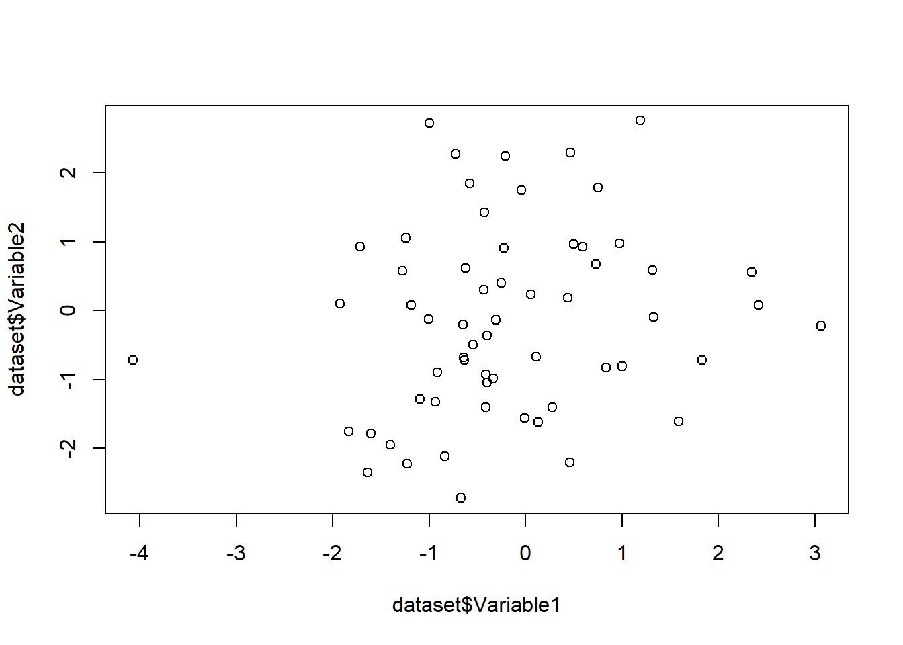
The function cor can also be used on the entire data matrix, yielding all pairwise correlations between variables:
#computation of the Pearson correlation matrix between all #variables of the dataset
correlation.pearson <- cor(dataset, method = 'pearson', use = 'complete.obs')
correlation.pearson## Variable1 Variable2 Variable3 Variable4 Variable5
## Variable1 1.00000000 0.19126844 0.21752224 -0.33142355 -0.03093511
## Variable2 0.19126844 1.00000000 -0.51765078 -0.01337544 -0.49872569
## Variable3 0.21752224 -0.51765078 1.00000000 -0.30235531 -0.07174296
## Variable4 -0.33142355 -0.01337544 -0.30235531 1.00000000 -0.03809821
## Variable5 -0.03093511 -0.49872569 -0.07174296 -0.03809821 1.00000000
## Variable6 -0.53181299 -0.35595914 0.04109194 0.14018466 0.58563977
## Variable7 0.50523610 0.63096198 -0.32476449 0.43999575 -0.33488644
## Variable8 -0.24407265 -0.28430370 0.11700066 -0.14327152 -0.33167843
## Variable9 0.54567571 0.09542881 0.45464382 -0.58902176 -0.17758377
## Variable10 -0.32526502 -0.47960646 -0.13381373 0.25007363 0.45375321
## Variable6 Variable7 Variable8 Variable9 Variable10
## Variable1 -0.53181299 0.50523610 -0.2440727 0.54567571 -0.3252650
## Variable2 -0.35595914 0.63096198 -0.2843037 0.09542881 -0.4796065
## Variable3 0.04109194 -0.32476449 0.1170007 0.45464382 -0.1338137
## Variable4 0.14018466 0.43999575 -0.1432715 -0.58902176 0.2500736
## Variable5 0.58563977 -0.33488644 -0.3316784 -0.17758377 0.4537532
## Variable6 1.00000000 -0.55376001 -0.5352480 -0.10179077 0.6954481
## Variable7 -0.55376001 1.00000000 -0.2478635 0.02078802 -0.4821684
## Variable8 -0.53524803 -0.24786347 1.0000000 -0.26898602 -0.3316227
## Variable9 -0.10179077 0.02078802 -0.2689860 1.00000000 -0.2663179
## Variable10 0.69544806 -0.48216841 -0.3316227 -0.26631788 1.0000000A matrix of correlation as we just obtained can provide a lot of information about the variables. However, for illustration in a paper it is better to use a representation of the correlation matrix called heatmap:
#Heatmap plot
library(gplots)##
## Attachement du package : 'gplots'## L'objet suivant est masqué depuis 'package:stats':
##
## lowessheatmap.2(correlation.pearson, trace = 'none', cexRow = 0.8,
cexCol = 0.8, col= colorRampPalette(c("green","white","red"))(20))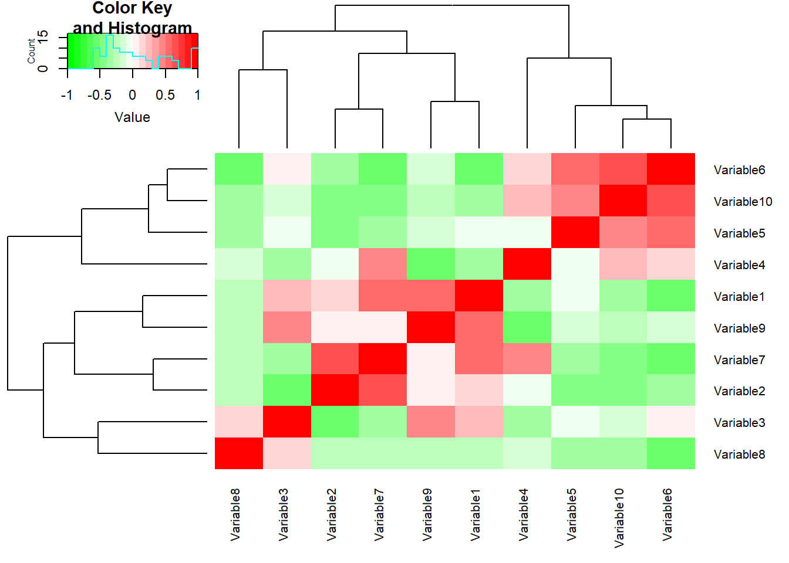
Here, the correlation is represented by a ‘heat’, blue or ‘cold heat’ represent negative correlations, red or ‘hot heat’ represent strong correlations.
The trees produced by the function heatmap on each side of the plot represent the similarity between the variables based on their correlation matrix. Each variable has a root, and all roots merge at the base of the tree. The height at which the roots of two variables merge represents the dissimilarity between them. The higher they meet, the more dissimilar they are.
The Pearson correlation is particularly good at quantifying association given a linear relationship between two variables X and Y, i.e., in cases where $ X = aY + b $. However, more complex relationship can exist between variables. Alternative correlation measures can be used to capture other forms of association. However, the interpretation of this correlation can be challenging.
One common alternative is to use Spearman’s correlation coefficient. It is non-parametric and often denoted by \(\rho\). The computation is similar to the Pearson correlation, but the values are replaced by their rank. For example, to compute the Spearman correlation coefficient between
x <- c(7, 2, 5)and
y <- c(1, 5, 4)we actually compute the Pearson correlation between the ranks of \(x\):
rank(x)## [1] 3 1 2and the ranks of \(y\):
rank(y)## [1] 1 3 2Let us now compute the Spearman’s rank correlation matrix for dataset and plot the heatmap.
#computation of the correlation matrix between all variables of
correlation.spearman <- cor(dataset, method = 'spearman', use = 'complete.obs')
heatmap.2(correlation.spearman, trace = 'none', cexRow = 0.8,
cexCol = 0.8, col= colorRampPalette(c("blue","white","red"))(20))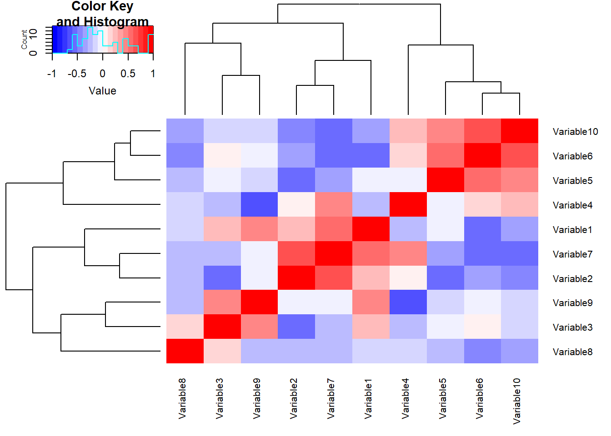
Here as I have only created linearly correlated variables, not much difference can be seen between both heatmaps. Note that a transformation of the data that does not change the ranks of observations, such as the logarithm or the square root, does not affect the Spearman correlation.
The third correlation coefficient, Kendall’s tau represented by \(\tau\), is also nonparametric. Let us consider 2 variables X and Y having 3 observations, (0, 1, 2) and (1, 4, 3) respectively. The 3 subjects have each 2 values, one for each variable, given by (0, 1) for the first, (1, 4) for the second, and (2, 3) for the third. Kendall’s tau will check if each pair of subjects has concordant or discordant observations, and count the number of subjects of each type. In the above example, the second subject (1, 4) involves both entries larger than the first subject (0, 1), so they are called concordant. The third subject (2, 3) involves one entry larger and one smaller than the second subject (1, 4), so they are called discordant. Finally, the third subject (2, 3) is concordant compared with the first (0, 1).
The correlation is then computed as the number of concordant pairs of subjects minus the number of discordant pairs, divided by the total number of pairs. In the above example, there are 2 concordant pairs and one discordant, and the total number of pairs of subjects (combinations of subjects) is equal to 3, leading to a Kendall’s \(\tau\) of 1/3=0.333.
This coefficient can be more interpretable than the Spearman’s correlation coefficient.
#computation of the correlation matrix between all variables of
correlation.kendall <- cor(dataset, method = 'kendall', use = 'complete.obs')
heatmap.2(correlation.kendall, trace = 'none', cexRow = 0.8,
cexCol = 0.8, col= colorRampPalette(c("blue","white","red"))(20))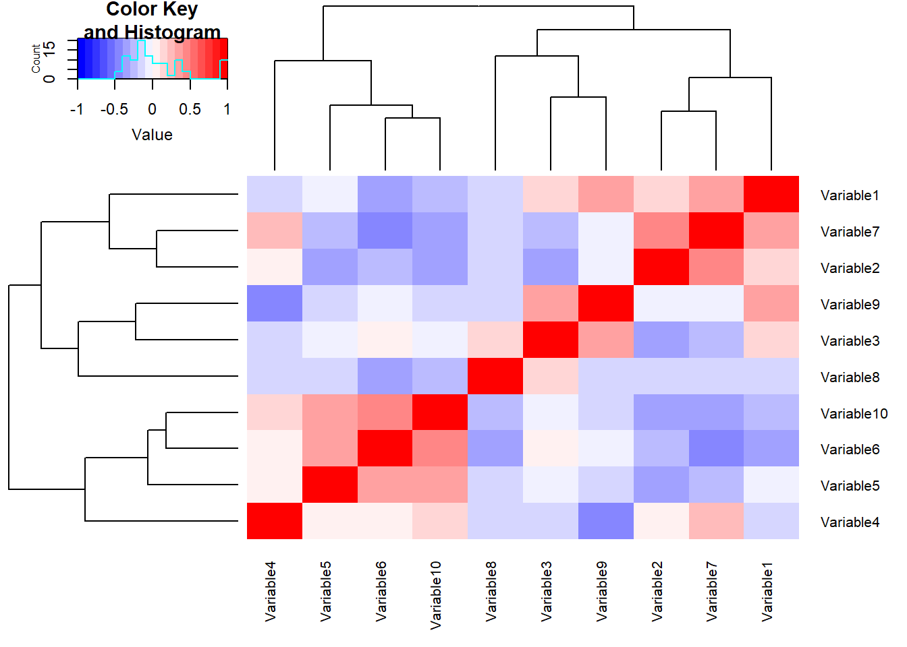
Quick task(s):
Solve the task(s), and check your solution(s) here.